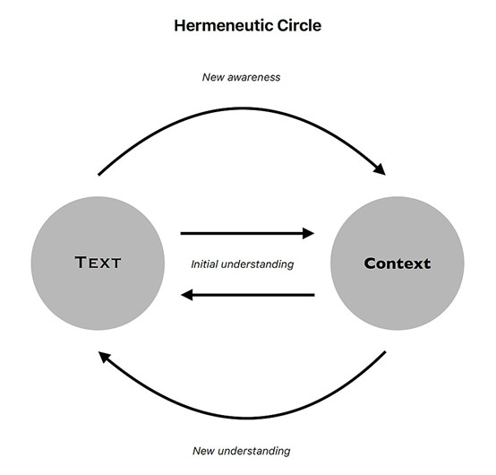

历史的创造和创造的历史 [0]
读书笔记：《反思史学与史学反思：文本与表征分析》
在这里发表出来的，乃是哈利卡尔那索斯人希罗多德的研究成果，他所以要把这些研究成果发表出来，是为了保存人类的功业，使之不致由于年深日久而被人们遗忘……
——希罗多德《历史》
[1]:1
我困扰于一个问题：作为已经成为既定事实的“过去”，为什么在重新叙述与阐释的过程中变得扑朔迷离？对于同一事件的描绘与评价，为什么会出现大相径庭的多元观点？甚至，仅仅是切换一下立场和视角，对同一个历史事件，就能产生迥异且互斥的阐释与评判，这是尝试在历史文本中寻找确定性的人无法回避的问题。
现代数学的发展为各个自然科学学科的发展提供了精确的定量研究工具和清晰优美的描述形式，为现代科技的发展提供了至关重要的基石和动力。然而，除了经济学领域，其余所有试图在社会科学、人文科学领域开展数理化的尝试最终都落入边缘化的窠臼。尽管统计学办法早在十九世纪就进入了历史学与人文研究，但始终未成为主流。历史学依旧通过叙述作为主要呈现方式。[2]:注1然而，过程性的叙事和定性的研究方法，都存在一个致命的缺陷——主观性。
人的注意力是有限的，知性是有限的，视角是有限的，而人类社会是复杂而混沌的，人类的心理活动是掩藏而难知的，历史事件——在没有时间机器的情况下——是无法真正回溯和全景重绘的（即使是正在发生的事件，要想完整而全面的描述，也是一件近乎不可能的事情）。所以一切的文本记述都不可能避免结构性的偏误，历史和社会学家们只能尽量去减少这种不自觉的忽视及其造成的影响。此外，先入为主的惯习（habitus）也会为研究者的观察和表述造成偏差，甚至是偏见。
即使是权威的历史文本——例如国家主持编纂的史书，也不能避免这种结构性问题。官方修史人员依旧会持有倾向性，在记载中流露出对皇帝的崇拜、对政治阴谋和军事失利的春秋笔法，以及对异端和边疆“野蛮”民族的贬抑，等等。此外，从国家视角展开的历史记述，必然会失去微观视角的声音，而现代历史学的研究早已表明这些“小历史”不容忽视。
有人会觉得，如果我们针对某个事件，直接和亲历者、或者相关人士开展访谈，观察事件对其生活造成的影响，并以此直接的问答与观察记录为第一手资料，就有助于破除研究者作为“局外人”的偏见和误解。人类学家们——对这类田野调查最为擅长的人群——却并不见得会对这种论调持积极态度。先不论这种方式注定的局限性，使得研究只限于较近现代的历史时期；而且，即使是同一个地域中的人，也会对同一事件产生完全不同的体感。例如，清朝时期发生在台湾花莲的大港口事件（或称 Cepo’ 战役）构成了当地阿美人重要的共同历史记忆，在汉人社区却鲜有记载，不受重视；日治台湾时期发生的南庄事件，在当地赛夏人社区里并没有留下多少记忆；[2]:6-7中国大陆地区在二十世纪 60 年代爆发大饥荒，直接导致千万人的死亡，但是由于饥荒严重程度在地域上分布不均匀，以及信息流通的受阻，不同地区、不同阶层的人所感受到的情况会有显著差异。[3]社会记忆是不可靠的。
我们当下的生活建立在过去的时间和事件的基础之上，我们的历史感知在历时维度上连续，并构建起我们对现实的感知，成为我们决策和行为的依据。但是，这一基础，却异于众人习以为常的观念，是如此的不稳固。一方面历史的客观是真实存在（过）的，并切切实实构成了延续至今的我们的生活；另一方面历史的真实只能被各种文本存留，且如此易失而不可再生，细节的真相被层层笼罩，非亲历者不可知——而亲历者自身的记忆与口说又是如此难以令人安心依靠。
小说《少年 Pi 的奇幻漂流》中有这样一段情节：
两名日本国土交通省的官员为了调查沉船的原因，而到了墨西哥的医院探访康复中的 Pi。Pi 告诉两位官员他所经历的故事，但他们不予采信，觉得这个故事是不可能发生的。Pi 于是告诉他们第二个故事──救生艇上没有动物，而是另外三位幸存者，包括轮船的厨师、断了一条腿的台湾船员、和 Pi 的母亲。厨师切断船员的腿当作鱼饵，又杀害船员及 Pi 的母亲以作为食物。不久后厨师就被 Pi 杀死并食用。
两位官员注意到故事之间的相似之处：鬣狗象征厨师、斑马象征船员、猩猩象征 Pi 的母亲、老虎象征 Pi 本人。Pi 指出，两个故事都无法被证明，也无法解释沉船的原因，之后便问两位官员偏好哪个故事。他们最终选了有动物的故事，Pi 向他们道谢并说：“信神也是如此。”两位官员便离去并提交报告。[4]
当历史被表述为文本时，它便经历了文本的表述人的重新组织和建构。对于读者来说，阅读的过程即其解读文本的过程，在解读中，人不可避免会受到自身经历、文化和观点的影响，因而其解读所得亦成为一种新的建构。“即使经过严谨的学术研究考据，当我们在叙述一段历史时，我们的遣词用字及句子的语气、时态都让这叙事成为一种新的建构。而别人在读这历史叙事时，他所获知的信息往往也是一种建构，基于其社会身份认同与知识背景的一种想象。”[5]:314对考据家来说，一个重要的事情，就如上述的日本官员所面对的问题一样，是“偏好哪个故事”造成的先入为主。总而言之，“无论是中文里的历史，或是英文里的 history，都是一词两义：过去真正发生的历史，以及人们记得的、叙述的、书写的‘历史’。”[5]:6前者往往被掩蔽在其本身造成的阴影下，这一点我们马上就要提及。
说到这里，或许我们应当先引入哲学领域的说辞。“人们常看到，在人文科学中主体与客体是相互蕴涵的。主体本身致力于获得客体的知识，反过来，主体，就其最主观的特性而言，又由客体对它的控制所决定，这种控制甚至发生在主体得以认识客体之前。”[6]:18这一阐述即所谓“诠释学循环”（hermeneutic circle）。它与历史文本有何关系？在历史研究中，研究者（主体）即由其研究对象（客体）所塑造和孕育，历史现象造就了我们自身。或者更进一步，即伽达默尔（Gadamer）的“效果历史意识”（wirkungsgeschichtliches Bewusstsein）理论所称，“我们不能使自己脱离历史过程”[6]:38。简言之，理解作为文本（text）的历史，仰赖文本所置身其中的语境（context）。理解从语境出发并最终回到语境。历史过程造就我们，但当我们回望她时，我们的目光却受到造就我们的材料的预先干涉，当这种干涉极端化后便形成了不良的意识形态后果，并导向对历史文本解释的扭曲。

重点不在于试图摆脱历史效果对历史性主体的影响（这种影响表现为认知中的预期性结构，即偏见），而在于以正确的方式进入主客体互嵌的循环。[6]:19与其追求与自身的历史传统的完全斩断，不如采取一种更具包容性和建设性的立场：通过反身性的（reflexive）思考和批判，达到揭露认知中预期造成的阴影的目的。事实上，皮埃尔·布迪厄的反身性理念牵涉更广泛的实践领域，即用一种学科的研究方法研究该学科自身，以期发现和矫正该学科自身的学术认知偏见。王明珂评论道：“……反思性研究，便是通过一些新方法、角度、概念，来突破认知的‘茧’，来深入发掘隐藏在表相之下的本相。”[5]:7
在铺垫了如此多的内容之后，终于可以正式地推出本文的主角了：《反思史学与史学反思：文本与表征分析》。本书作为王明珂的“华夏边缘”学说中具有基石意义的著作，提供了一系列分析历史文本和社会表相与本相的方法。作为历史人类学家，该书不仅仅能为历史学研究提供洞见，更为广泛意义上的社会科学提供启发。全书从目录来看分为如下九个章节：
- 事实与现实
- 典范与边缘
- 人类社会的基本面貌
- 表相与本相
- 认同与记忆
- 文本与情境
- 文本结构与情境结构
- 三种文本表征分析策略
- 结语
此外还有开头的谢词和前言（本文先前的铺垫正是在叙述这一部分），结尾的附录。
作为历史人类学家，王明珂需要同时和历史文献与实地调查打交道，因而相较纯粹的历史学家或人类学家更注重文本与田野的联合利用。“人类学家到实实在在的人群社会中进行田野，的确是他们值得骄傲的学术资产，这也让许多历史学家十分羡慕。……无法进行田野考察成了历史学家难以深入探究过去社会的普遍借口。”[5]:11-12而据他在前言所述，他创作本书的另一动机，是发扬“在文献中作田野”的口号，如此便能经由分析历史文本（乃至文本自身的结构）探索古代社会本相。
不过，在王明珂致力于历史学和人类学的结合时，同样任职于台湾中央研究院的林开世却有不同意见：“……人类学与历史学不会对话，对话的是各有自己理论关怀的学者，而对话的方式也不应该是交换既有的数据或理论，而是挑战对方的知识前提，寻找可以发挥自己专长的研究课题。”[2]:3-4他指出，人类学和历史学在近代西方殖民扩张的过程中，二者逐渐分化至不同的知识/权力体系；此外，他还抛出了一个颇具攻击性的观点，人类学和历史学的交流“如果只是互相借用两个学科使用各自传统的方法论所建立的数据，历史学者的文献，人类学者的田野材料，那么我们充其量只能说，这是一个遭遇（encounter），还谈不上对话。双方只是礼貌性的[sic]交换了名片，真正困难的部分，才刚开始”[2]:6，因为双方的交流并没有能够深入到相互挑战对方的知识前提的地步。
很可惜，虽然王、林二人都是台湾人，都任职于中央研究院，但我并未查找到二者就历史学人类学对话这一问题展开过交流或争论。
王明珂在其前言的陈述中，并未意识到林开世所警告的人类学自身隐含的殖民主义权力象征。在某种程度上，王明珂关于历史学和人类学结合的论述中，尽管意识到了仅仅借用方法论和研究材料的局限性，提出典范历史和边缘历史等“文类”，换言之，历史书写范式的遵循和违逆蕴含的言外之意，但是他的目光更聚焦于先前提到的对认识中存在的预期性结构的反思，因而并没能走出更深一步，即林提到的挑战知识前提。
但无论如何，王明珂所做的工作从任何一个角度看都令人拍案叫绝。不管你是历史爱好者还是历史工作者，这本书都能为你带来深刻的启发，迫使我们从新的角度看待习以为常的现象，刷新你对“历史”一词的认知。
需要说明的是，本文更类似于读后的分析和感想，不能代替原文的阅读。所以，我建议读者先阅读原书，确保对原书意旨有一个大概了解后再继续阅读本文。
下文若无特别注明，页数皆为《反思史学与史学反思》（上海: 上海人民出版社, 2016, 第1版）一书页码。
综述
全文大致依照层进式结构布局，各章环环相扣，从关键概念解释，一直到最后的文本分析方法，即前言中所称的“在文献中作田野”（do ethnography in archives）。其在前言中表述：“本书的主要内容，便在于说明如何通过文本、文类、历史心性、社会表征（表相）、社会现实（本相）等概念而‘在文献中作田野’，也由此揭露隐藏在文献中的另一些历史景象。”（页 12）我认为，对于新读者来说，尤其需要注意三个概念：表/本相、历史心性和文类（genre）。全书对历史学的反思成果尤凝聚与此。
纵使在前言部分的结尾（页 13），作者声明自己“并非是要完全推翻、取代我们原来相信的典范历史”，声明其不同于后现代主义的解构思潮，但是其方法论显然根植于后现代哲学之上。该书在精神上，从底层上就已经“不由自主”地继承了现代哲学的架构。历史地讲这是其强调的“反思”（源自现代社会学的运动，在社会科学中即已经具备不可割裂的后现代特征）连带的必然结果。问题在于，王在此所指“另一些历史景象”是什么，“造成我们认知偏见的帷幕”遮掩的东西是什么，我们又该如何超越阻碍理解的障碍，为历史学的发展做出建设？
叙事长久以来一直是历史学至关重要的一部分，但是，在二战后将历史学科学化的浪潮中，叙事作为一种研究模式并未得到应有的重视，直到二十世纪 70 年代后，历史学开启了从分析的（analytical）向叙事的（narrative，亦称修辞的［rhetorical］或语言学的［linguistic］）转向。这一转变的原因，除了上述的主流哲学领域影响之外，还在于分析的历史学理论范式带来的成果回报边际递减。[7]:2,6 【注一】海登·怀特认为，历史著作“包含一种深层的结构性内容，它一般而言是诗学的，具体而言在本质上是语言学的，并且充当一种未经批判便被接受的范式”。[8]:1叙事必然离不开修辞，因而叙事的历史也必然接纳修辞，甚至容忍艺术性在再现历史实在的过程中扮演重要角色。给苏格拉底的命运添上最后一根稻草的修辞术（rhetorical devices）[9]，由此，讽刺般地在历史学中成为了不可忽视的存在。
我们发现，这一系列演进似乎导向了这样一个荒诞的结果：实证主义者为揭开作为过去的历史之上的迷雾，不惜将社会科学乃至自然科学的研究范式引入历史学的研究；然而他们的努力反而将这门学科从客观性和确定性的前景推向了充斥意识形态、感情色彩和艺术虚构（fiction）成分的混沌深渊。但事实真的如此不堪吗？对历史的解构真的终结于往者不可知的穷途吗？我想并不是这样。历史在其本体论层面上，存在于话语的建构，但是，这一事实恰好表明了作为此在生存的我们何以存在、以何存在：历史和虚构的相关性或相互隶属性关涉我们作为个人和社会存在的同一基本特征——历史性（historicity）。“我们创造历史、我们融入历史、我们是历史的存在。因此，探讨的最终问题是要表明，历史与虚构借助它们共同的叙事结构，究竟以什么方式去描述和重新描述我们的历史状况。”[6]:252-253
【注一】：一个显著的例子是计量史学（cliometrics）影响力的式微。
系列文章
- 历史的创造和创造的历史 [0]
- 历史的创造和创造的历史 [1]
- （施工中……）
参考
- 希罗多德, 历史：希腊波斯战争史（上册）, 译 王以铸, 汉译世界学术名著丛书 (商务印书馆, 1997年). ↩
- 林開世, 《人類學與歷史學的對話？一點反省與建議》, 臺大文史哲學報, 期 59 (2003年1月), https://doi.org/10.6258/bcla.2003.59.02. ↩
- 编程随想, 《谈谈三年大饥荒[2]：关于死亡人数的谎言》, 编程随想的博客, 2012年5月10日, https://program-think.blogspot.com/2012/05/three-years-famine-2.html. ↩
- 维基百科, 《少年Pi的奇幻漂流》, 2025年2月3日, https://zh.wikipedia.org/w/index.php?title=%E5%B0%91%E5%B9%B4Pi%E7%9A%84%E5%A5%87%E5%B9%BB%E6%BC%82%E6%B5%81&oldid=85936275. ↩
- 王明珂, 反思史学与史学反思：文本与表征分析, 第1版 (上海人民出版社, 2016年). ↩
- 保罗·利科, 诠释学与人文科学：关于语言,行为与解释的论文集, 第1版, 译 洪汉鼎, 贡献 约翰·B. 汤普森 (中国人民大学出版社, 2021年). ↩
- 彭刚, 叙事的转向：当代西方史学理论的考察, 第2版 (北京大学出版社, 2017年). ↩
- 海登·怀特, 元史学：19世纪欧洲的历史想象, 第1版, 译 陈新, 人文与社会译丛 (意林出版社, 2013年). ↩
- 据柏拉图《申辩》（Apology）记载，苏格拉底在审判中请求陪审团“如果听见自己在申辩中，使用的语言同他在市场上，以及其他地方使用的别无二致，请不要因此惊奇，或者打断。”（原文：…if you hear me speaking in my defense with the same speeches I am accustomed to speak both in the marketplace at the money—tables, where many of you have heard me, and else— where, do not wonder or make a disturbance because of this.）参见Plato, Apology, 17a—18a；另可注意苏格拉底语惊四座的量刑请求，35e—38b。他在申辩中不使用演讲技巧，也不博取陪审团同情。然而，这一决定，以及在后续陈述中的各种直言不讳，在后世学者看来反而强化了陪审团对苏格拉底的仇恨。参见Vasileios Adamidis, 《The Failed (?) Rhetoric of Socrates – Identification, Non-conformity, and Subtle Criticism of the Court in Plato’s Apology of Socrates》, Athens Journal of Humanities & Arts 12, 期 3 (2025年): 273～84, https://doi.org/10.30958/ajha.12-3-2. ↩